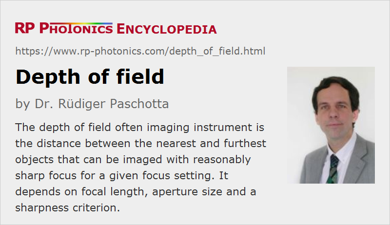

Depth of Field
Definition: the distance between the nearest and furthest objects that can be imaged with reasonably sharp focus for a given focus setting
German: Schärfentiefe, Tiefenschärfe
Categories: general optics, vision, displays and imaging
How to cite the article; suggest additional literature
Author: Dr. Rüdiger Paschotta
Most imaging instruments can provide sharp images only in a limited range of observation distances. Perfect imaging to a certain image plane (e.g., the location of an image sensor in a photo camera) is only possible for an object plane which is conjugate to the image plane. Image of objects before or after that conjugate object plane will be more or less blurred. (An exception is the rarely used camera obscura.)
The width of the range of observation distances is called the depth of field. It must not be confused with the depth of focus, which is the corresponding quantity on the image side.
Criteria for Reasonable Focus
For a quantitative definition of the depth of field, one requires a criterion for what level of defocus is acceptable. Different criteria may be sensible, depending on the situation:
- One may define the limits as the points where the imaging quality, measured for example with a point spread function, become significantly worse than in the focus. Such a criterion, however, may not be sensible if the imaging quality in the focus is much better than required or usable. For example, for an image sensor of a digital camera it would not matter if the circle of confusion rises from one tends to one third of the pixel spacing.
- Therefore, one may alternatively define a certain diameter of the circle of confusion as the limit, irrespective of how small that circle can be for optimal focusing.
Calculation of the Field of Depth
Here we use the second kind of defocus criterion as explained above, with a maximum diameter C of the circle of confusion, as calculated from purely geometrical optics. One then obtains the following equations for the nearest and furthest observation distance, when the focus is set to the distance df:
where D is the diameter of the aperture stop. It is assumed that we have a thin lens, where the entrance and exit pupil coincide with the lens. The depth of field is the difference between maximum and minimum distance.
Note that the above equations hold only for small angles; that condition is usually reasonably well fulfilled in photography, for example, but not for microscopes.
When focusing to short distances, the depth of field will be relatively small. When focusing to larger distances, it increases, and one eventually reaches the hyperfocal distance where the maximum distance becomes infinity. That is the situation where the depth of focus is the largest possible.
As is well known in photography, the depth of field can be increased by reducing the diameter of the aperture stop, which at the same time decreases the image brightness (or requires a correspondingly longer exposure time).
The presented equations hold only within the validity of geometrical optics, which is however usually given in the context of photography.
Questions and Comments from Users
Here you can submit questions and comments. As far as they get accepted by the author, they will appear above this paragraph together with the author’s answer. The author will decide on acceptance based on certain criteria. Essentially, the issue must be of sufficiently broad interest.
Please do not enter personal data here; we would otherwise delete it soon. (See also our privacy declaration.) If you wish to receive personal feedback or consultancy from the author, please contact him e.g. via e-mail.
By submitting the information, you give your consent to the potential publication of your inputs on our website according to our rules. (If you later retract your consent, we will delete those inputs.) As your inputs are first reviewed by the author, they may be published with some delay.
See also: imaging, imaging with a lens, hyperfocal distance, depth of focus
and other articles in the categories general optics, vision, displays and imaging
|  |
If you like this page, please share the link with your friends and colleagues, e.g. via social media:
These sharing buttons are implemented in a privacy-friendly way!